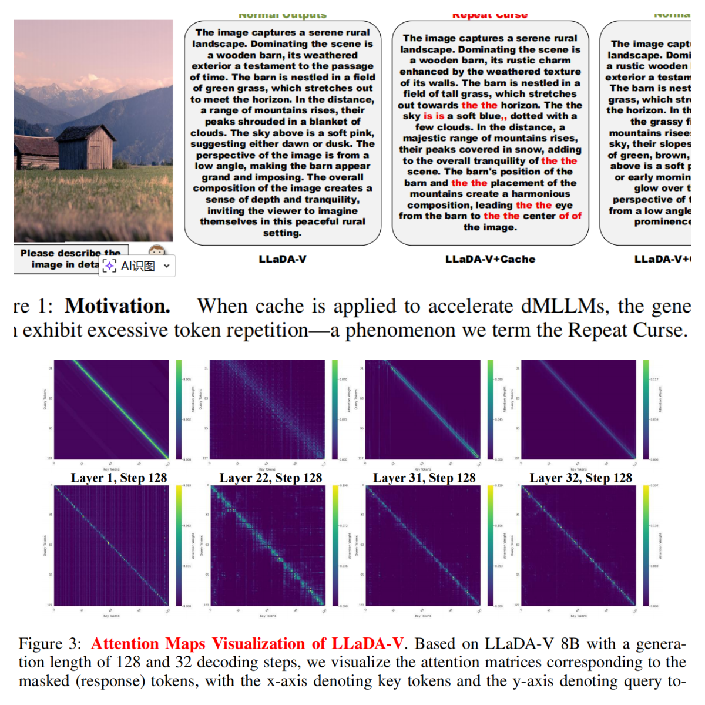
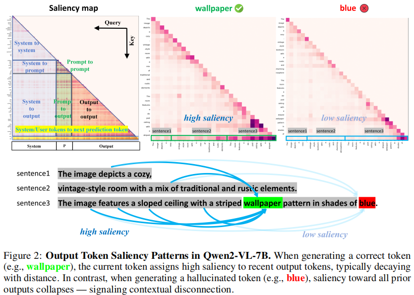

01 · Diagnose
Mechanistic Diagnosis of Multimodal Models
Reliability starts with knowing where things break. I analyze information flow, attention, and saliency inside vision–language models and diffusion MLLMs to explain failures such as hallucination, attention sinks, and the repetition curse under cache acceleration.
Selected work
- Context tokens are anchors: understanding the repeat curse in dMLLMs from an information-flow perspectiveICLR'26
- CoTA++: three information-flow disruptions behind the repeat curse, and a training-free fix for eachPreprint
- Hallucination begins where saliency dropsICLR'26 Oral
- TokenPenalty: alleviating attention sinks and positional decay in LVLMsACL'26 Findings

